- 任务场景
在支付宝中，如果你在蚂蚁森林里面种植了一颗树苗，它会根据用户每天使用支付宝的各种场景：地铁出行，线下支付等来生成相应的能量，每天早上，支付宝会通知每个用户收取能量，以便他们能够种植更多的树苗。
-
单机场景
- Spring Scheduler
import org.springframework.scheduling.annotation.Scheduled; import org.springframework.stereotype.Component; @Component @EnableScheduling public class EnergyCollectTask { @Scheduled(cron = "0 0 0 * * *") public void collectEnergy() { try { // Execute the energy collection logic System.out.println("Collecting energy..."); } catch (Exception e) { // Handle exception logic System.out.println("Failed to collect energy, reason: " + e.getMessage()); // Handle exception situation sendAlertMessage(e); } } private void sendAlertMessage(Exception e) { // Handle exception situation System.out.println("Sending alert message: " + e.getMessage()); } }-
spring scheduler 几种使用方式
- @Scheduled(fixedDelay = 3 * 1000)
- nextExecutionTime= lastCompletionTime + fixedDelay
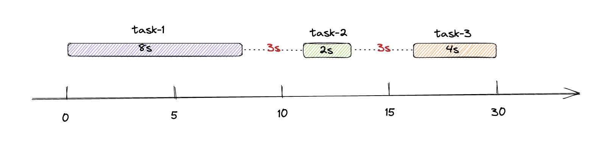
- 隔3s执行一次
- nextExecutionTime= lastCompletionTime + fixedDelay
- @Scheduled(cron = "*/3 * * * * *")
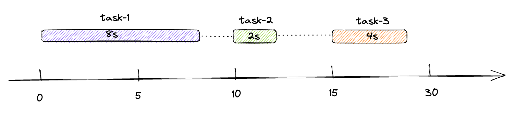
- 每3s执行一次
- @Scheduled(fixedRate = 3 * 1000)
- nextExecutionTime= firstExecutionTime + fixedRate * times
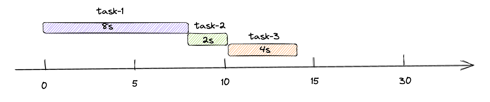
- nextExecutionTime= firstExecutionTime + fixedRate * times
- @Scheduled(fixedDelay = 3 * 1000)
-
spring scheduler 实现
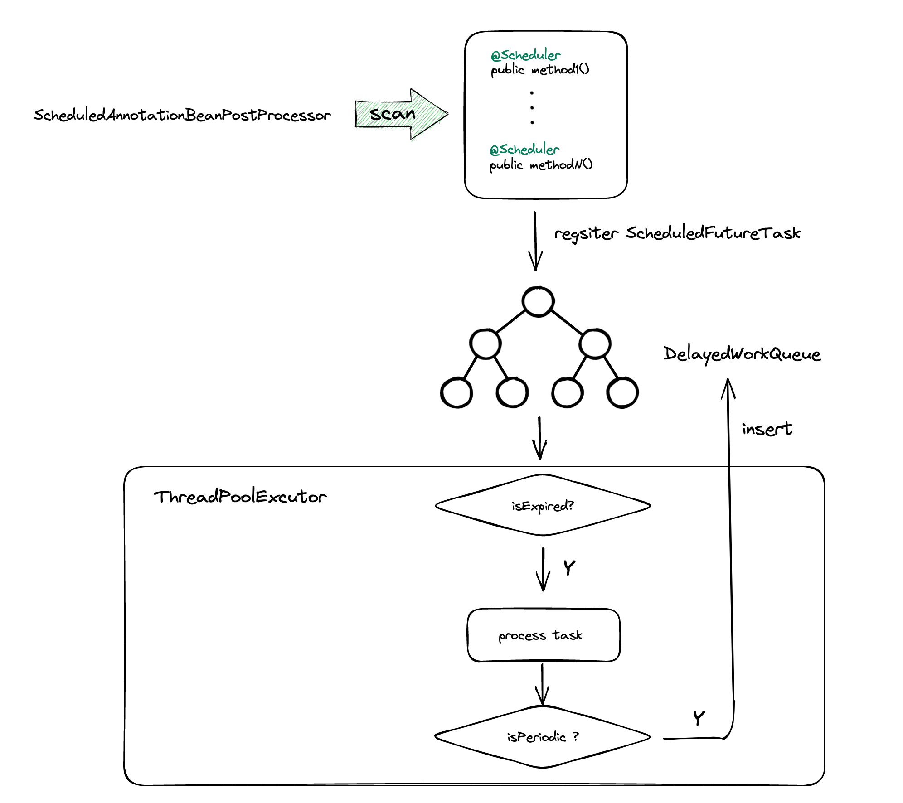
-
如果同一时刻有大量任务需要处理，DelayWorkQueue是根据PriorityQueue实现的，底层数据结构是堆,从而删除和插入的都是O(logN)，为了性能考虑，可以使用时间轮算法来获取任务，它的插入和删除都是O(1)
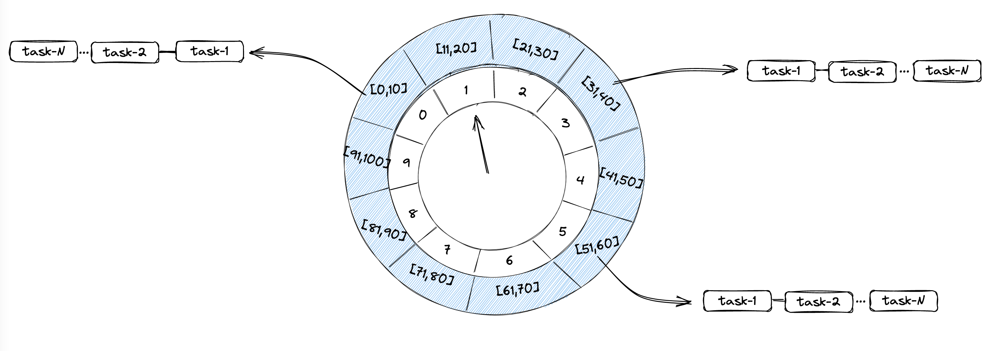
时间轮可以理解为一种环形结构，像钟表一样被分为多个 slot 槽位。每个 slot 代表一个时间段，每个 slot 中可以存放多个任务，使用的是链表结构保存该时间段到期的所有任务。时间轮通过一个时针随着时间一个个 slot 转动，并执行 slot 中的所有到期任务。
时间轮定时器最大的优势就是，任务的新增和取消都是 O(1) 时间复杂度，而且只需要一个线程就可以驱动时间轮进行工作。
随着微服务化架构的逐步演进，单体架构逐渐演变为分布式、微服务架构。在此的背景下，很多原先的单点式任务调度平台已经不能满足业务系统的需求，系统可以部署多个应用节点，而每个应用节点都可以当作任务执行器，如果一个任务执行器宕机，任务可以转移到其他存活的执行器上去执行，同时对于数据量大且处理耗时的任务，可以利用好多个节点的资源，实现任务在多个节点分片处理。
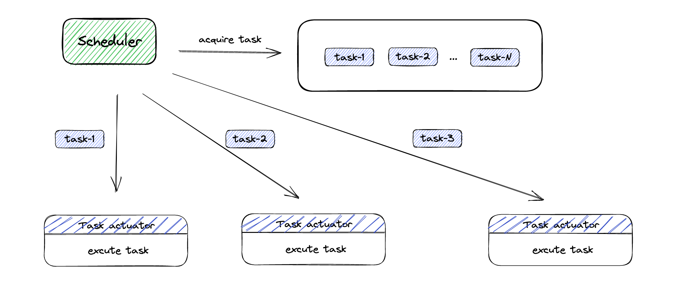
-
在分布式场景下，需要确保任务能够被分配到可用的机器上并得到调度执行。从而就需要考虑分布式场景下所面临的问题：
- 高可用性
- 在分布式场景下，集群中的某些节点可能会宕机，需要确保任务被正常执行
- 调度策略
- 轮询调度，异常转移，分片处理
- 任务的注册和发现
- 任务的持久化存储
- 避免在节点宕机、重启等情况下能够重新加载已有的任务信息，保证任务不丢失
- 分布式锁
- 多个节点同时执行同一个任务时，需要保证同一时间只有一个节点在执行该任务
- 可扩展性
- 通过添加新的节点来提高任务执行的并发度，从而提高任务的执行效率
- 监控和报警
- 通过监控和报警机制来查看任务是否正常执行
- 高可用性
-
Quartz
- 通过数据库的方式，来保证同一时间只有一个节点获取任务触发器
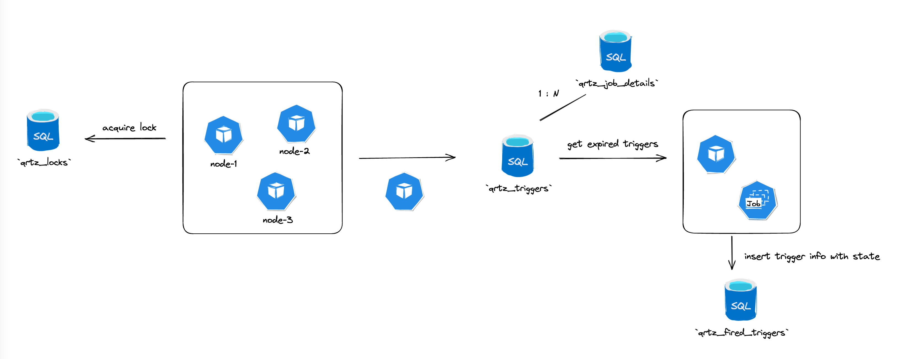
- 节点轮询
- 每个节点的scheduler模块都会去轮询是否有到期的job，每个节点会去抢占锁，来保证同一时间只有一个节点执行任务
- 节点异常处理
- 每个节点都会及时更新自己的状态到
qrtz_scheduler_state，当节点出现宕机时，其他节点会及时更新这个节点为DEAD，同时将未执行的任务根据策略重新执行
- 每个节点都会及时更新自己的状态到
- 任务执行处理
- 任务超时未执行或者执行报错都会根据执行策略来进行调度或者重试
- 动态管理任务
- 通过API的方式来查询和修改任务信息
- 通过数据库的方式，来保证同一时间只有一个节点获取任务触发器
-
xxl-job
- quartz通过抢占式获取DB锁来确保只会存在一个节点来处理任务，可能会导致节点负载悬殊，同时调度逻辑和执行任务器耦合在一起，可能会导致性能影响
- xxl-job在此基础上做了一些拓展和优化，实现调度器和执行器的分离，支持任务的分片处理，并且考虑各节点的负载均衡。
scheduler线程定时扫描数据库中的任务，同时利用数据库锁的方式，避免同一任务被重复调度
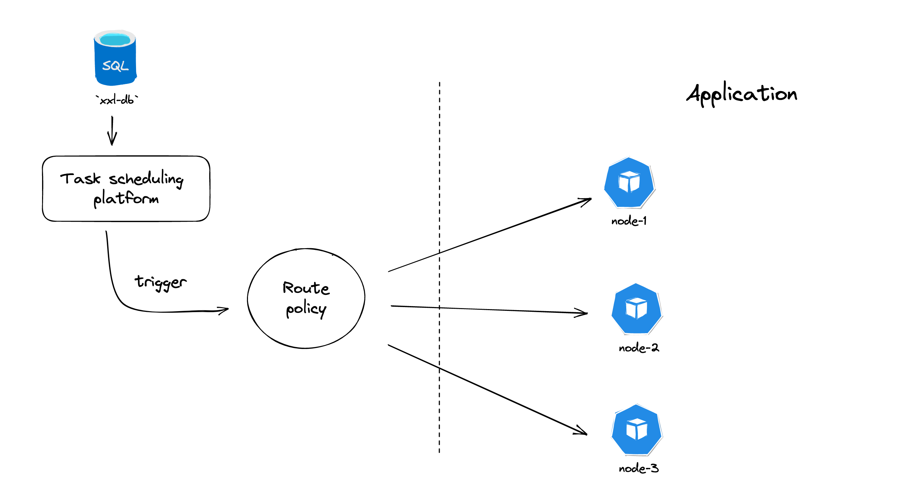
- 配置任务
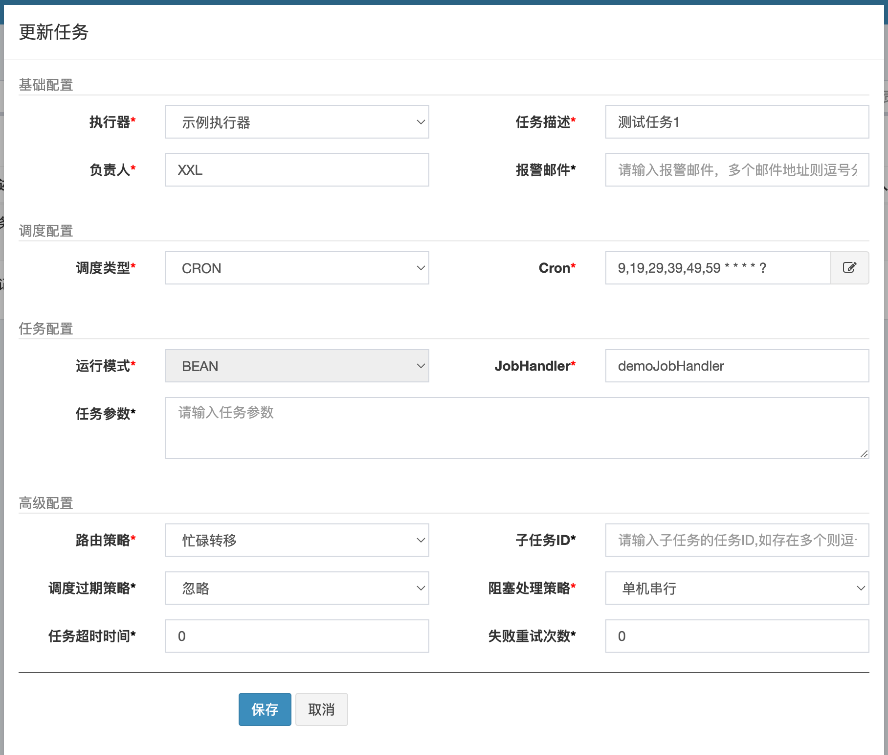
路由策略
-
FIRST(第一个)- 固定选择第一个机器
-
LAST(最后一个)- 固定选择最后一个机器
-
ROUND(轮询) -
RANDOM(随机)- 随机选择在线的机器
-
CONSISTENT_HASH(一致性HASH)- 每个任务按照Hash算法固定选择某一台机器，且所有任务均匀散列在不同机器上
-
LEAST_FREQUENTLY_USED(最不经常使用)- 使用频率最低的机器优先被选举
-
LEAST_RECENTLY_USED(最近最久未使用)- 最久未使用的机器优先被选举
-
FAILOVER(故障转移)- 按照顺序依次进行心跳检测，第一个心跳检测成功的机器选定为目标执行器并发起调度
-
BUSYOVER(忙碌转移)- 按照顺序依次进行空闲检测，第一个空闲检测成功的机器选定为目标执行器并发起调度
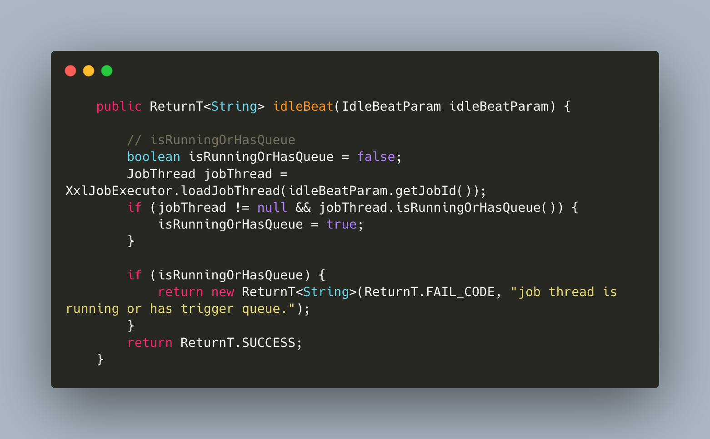
- 按照顺序依次进行空闲检测，第一个空闲检测成功的机器选定为目标执行器并发起调度
-
SHARDING_BROADCAST(分片广播)：广播触发对应集群中所有机器执行一次任务，同时系统自动传递分片参数；可根据分片参数开发分片任务；
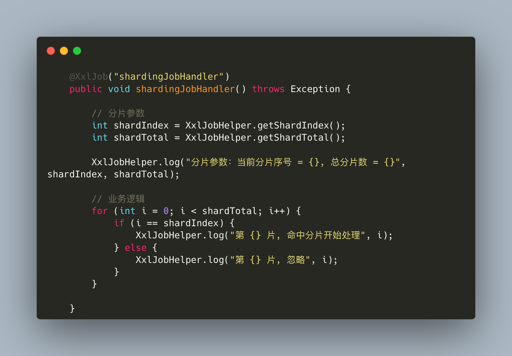
-
阻塞处理策略
- 任务的一次运行还没有结束，下一次调度的时间又到了
- 单机串行（默认）：调度请求进入单机执行器后，调度请求进入FIFO队列并以串行方式运行；
- 丢弃后续调度：调度请求进入单机执行器后，发现执行器存在运行的调度任务，本次请求将会被丢弃并标记为失败；
- 覆盖之前调度：调度请求进入单机执行器后，发现执行器存在运行的调度任务，将会终止运行中的调度任务并清空队列，然后运行本地调度任务；
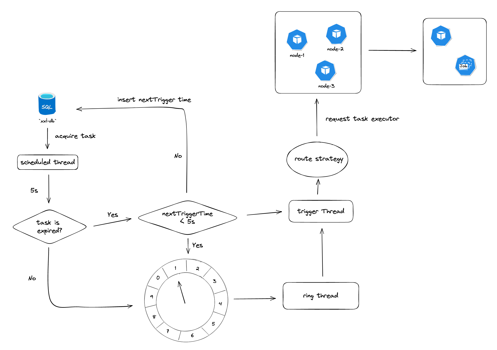
-
总结：
- 从单机式任务调度到分布式多节点部署，其中都需要考虑到任务触发的时间，触发策略，重试机制等，
- 在分布式下需要考虑到高可用，避免节点故障而导致任务失败，合理利用集群资源，进行分片处理，增加任务的处理效率，同时可以进行动态扩容。但是也需要考虑到分布式场景下锁的竞争，目前有数据库的实现，也有基于redis、zookeeper分布式锁的实现，其目的都是为了解决多节点调度竞争问题。
-
- 分片处理时将任务进行分阶段处理，同时收集结果，及时处理
type ShardingProcessor interface { PreProcess(ctx context.Context, tc *TaskContext) error ShardingProcess(ctx context.Context, tc *TaskContext) error Notify(ctx context.Context, tc *TaskContext)error PostProcess(ctx context.Context, tc *TaskContext) error } - 流量控制
- 通过监听性能指标：CPU 、DB, 来控制路由策略
- 分片处理时将任务进行分阶段处理，同时收集结果，及时处理
-
reference